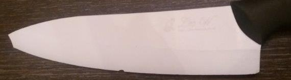
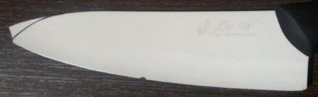
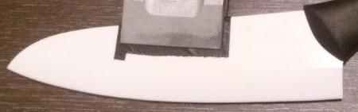

|
|
|
Kitchen Knives |

Edge Angles
Guidelines shown below are for Included Angles (α).
CB's USB Projection Calculator is recommended for calculating setup for Tormek knife jigs. There are a number of online calculators that can also be used for sharpening knives.
The only real stumbling block is fear of failure. In cooking, you've got to have a what-the-hell attitude.
Julia Child
|
General Guidelines |
||
|---|---|---|
|
Type |
α |
Notes |
| Bread Knife | n/a | (use these instructions : Serrated Edge Knives) |
| Butcher Knife | 40° | |
| Chopping Knife | 30° | |
| Clever | 50° | |
| Filleting Knife | 15° | |
| General Knife (Ceramic) | 30° | This is based on Dr. Vadim Kraichuk's research. |
| General Knife (Metal) | 24° | Could be anything up to 35°, however Dr. Vadim Kraichuk at KnifeGrinders recommends 24°. Given his vast experience and testing data, this is the recommended value. |
| Paring Knife | 24° | |
| Single Bevel | 16° | This is for quality, high-carbon knives. For lesser quality knives, consider increasing to 20°. KnifeGrinders have documented the procedure they use, and also created a YouTube video. |
|
Deburring Guidelines |
|||||
|---|---|---|---|---|---|
|
Type |
1st Deburring |
2d Deburring |
Notes |
||
|
Angle |
Grit size |
Angle |
Grit size |
||
| Harder steels | -0.2° | 3 - 6 µm | 5° | 0.25 - 0.5 µm | Edge Angle Stropping - for steels which are brittle, have high hardness, are high carbon or carbide steels. |
| Softer steels | 0° | 3 - 6 µm | 1.5° | 1 µm | High Angle Stropping - for steels which are tough or ductile, have low hardness or low carbon, or are fine carbide. |
Some manufacturers give guidelines for their knives. Those are noted below; however, the guidelines above should be considered.
|
Manufacturer's Guidelines |
|||
|---|---|---|---|
|
Type |
α |
Notes | |
|
Advised |
Range |
||
| Cangshan | 32° | -- | Cangshan recommends 16° degrees per side (β). |
| Chroma | -- | 10° - 20° | |
| Fischer-Bargoin | -- | 15° - 20° | |
| Global | -- | 10° - 15° | |
| Korin | 24° | 20° - 30° | Korin recommends 10° - 15° degrees per side (β). |
| MAC | -- | 20° - 30° | MAC recommends 10° - 15° degrees per side (β). |
| Messermeister | 30° | 30° - 40° | Messermeister recommends 15° - 20° degrees per side (β). |
| Shun | 32° | -- | Shun recommends 16° degrees per side (β). |
|
Victorinox
- Slicing knives - Boning knives |
30° 40° |
-- -- |
|
|
Wüsthof
- Standard knives - Asian-style knives |
28° 20° |
-- -- |
|
|
Zwilling
- Kramer knives - Miyabi knives - Santoku knives - Zwilling knives |
-- -- -- 30° |
9° - 12° 9° - 12° 9° - 12° -- |
|
The shape of the grind used is a call best made by the tool's use, based on your own experience. Additional notes are available for Grind Profiles.
I've not found value in adding micro/secondary bevels to kitchen knives, so that is not recommended here. If the sharpener wants to add one, an additional 2° should be sufficient. (Additional notes are also available on a different web page for Micro / Secondary Bevels.)
The Knife Angle Setter jig is greatly useful if using the WM-45 Knife Jig to hold the blade.
Jigs, Fixtures, & Modifications. Jan Švancara posted a design for using a knife sharpening platform in 2015 on the Tormek Forum. This is certainly worth reading, and there are also pictures of this in the jigs section.
Dr. Vadim Kraichuk with KnifeGrinders posted an article about sharpening ceramic blades. As Vadim has passed, I have captured his process below:
Andrew Murphy ("smurfs" on the Tormek Forum) followed that procedure to sharpen (and re-profile) a ceramic knife. He posted his results after following Dr. Kraichuk's procedure, showing the before and after pictures (pictures courtesy Andrew Murphy).
| The knife before, with a broken tip and nicks in the cutting edge. |  | |
| The plan for re-profiling the blade. |  | |
| Once finished. |  |
|
β |
Comments |
|---|---|
| <10° |
Edges in this range are good for cutting softer materials. For example, razor blades are sharpened at angles of five to nine degrees. This does result in a delicate edge which is easy to damage. |
| 10° - 15° |
Knife edges in this range of angles can be applicable in providing a smooth cutting action for knives which are used to slice meat or cut other soft items. This is why fine Japanese knives are usually sharpened is in this range. It is also common for some woodcrafts knifes and fillet knives. Do note: many Japanese and carving knives are only sharpened on one side. In that case, α = β. Also note that a knife which is sharpened at such an angle has an edge angle which is too weak to handle any chopping motion type of work. And, if the steel is harder (such as with Japanese knives), such a sharp angle will easily fracture if used in chopping activities. |
| 15° - 17° |
With an α angle of 30° to 34°, these knives will cut quite easily. Japanese knives and newer Chef's Knives are usually sharpened at this angle from the factory. Although less durable than those with higher angles, their cutting power makes it an appropriate tradeoff. |
| 17° - 22° |
Knives in this angle are common in kitchens and outdoor activities. It is also a useful edge angle range for pocket knives. This is a common sharpening angle when you are looking for a general-use blade, and is the typical sharpening angle for most standard kitchen knives. These knives are often built of tough material that can withstand a sharpening edge of this angle and still cut well without any issue. |
| 22° - 30° |
Edges in this range are more durable, and are appropriate for forrest and hunting knives, pocket knives, and tougher applications. This is a typical edge angle for durable knives. |
| >30° |
Edges past 30° are very durable, although their cutting ability is significantly reduced. Most knives won't benefit from this sharpening angle. These angles are common in tools and cutting blade such as cleavers, machetes, and axes, especially as these tools are made from softer steel. |
|
|


Click on either image for a bigger sized view.
Images courtesy Todd Simpson via Dr. Vadim Kraichuk of KnifeGrinders.
The scanning electron microscope (SEM) images to the right show the burr on a knife in the 1st image, that was then "ripped off" by cutting cross-grain into a piece of redwood in the 2nd image - loss of the sharp edge is obvious.
Key take-away from these photos : don't skip the honing step.